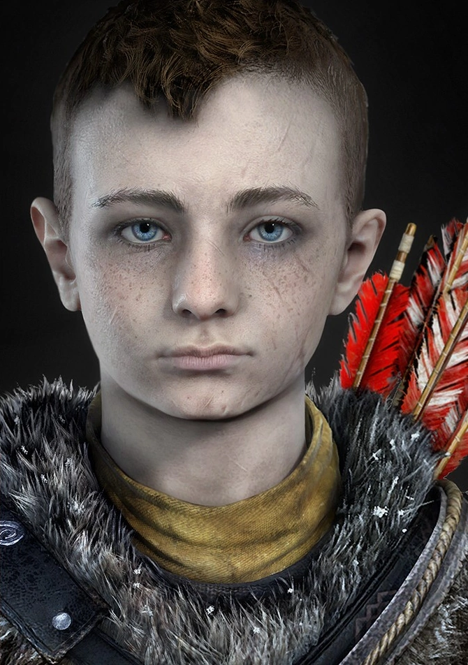

AVISO ANTES DE VER ESSA PÁGINA
Nessa página vou falar mais sobre a saga do God of War na era Nórdica(God of war de 2018), caso você não conheça sobre a saga da Grécia clique no link: Resumo da saga da Grécia

Nessa página vou falar mais sobre a saga do God of War na era Nórdica(God of war de 2018), caso você não conheça sobre a saga da Grécia clique no link: Resumo da saga da Grécia
Kratos é pai novamente. Como mentor e protetor de Atreus, um filho determinado a ganhar seu respeito, ele é forçado a encarar e controlar a fúria que há muito tempo o define enquanto viaja por um mundo ameaçador com o seu filho.
Com a vingança contra os deuses do Olimpo no passado, Kratos agora vive no reino das divindades e monstros nórdicos.
É nesse mundo duro e impiedoso que ele deve lutar para sobreviver enquanto ensina seu filho a fazer o mesmo e tenta impedi-lo de repetir os erros cruéis do Fantasma de Esparta.
Esta impressionante repaginação de God of War reúne todas as características marcantes dessa famosa franquia — combate brutal, lutas épicas contra chefes e uma grandiosidade de tirar o fôlego — e as mescla a uma narrativa poderosa e emocionante que reestabelece o mundo de Kratos.
| Imagem | Personagem | Sobre |
|---|---|---|
| Kratos | O personagem principal do jogo. Após os acontecimentos de God of War III, Kratos aparentemente se mudou para a Escandinávia e começou uma família. Ele tornou-se mais velho e mais sábio, possuindo um melhor controle sobre o seu temperamento. | |
|  | Atreus | Filho de Kratos nessa nova saga. Ele é um menino impulsivo e não treinado |
 |
Baldur | Filho de Odin, ele é irmotal e principal Antagonista desse jogo |
| Freya | Também conhecida como A Bruxa da Floresta, é uma deusa nórdica que ajuda Kratos e Atreus em sua jornada. Ela era a esposa de Odin, mãe de Baldur e ex-rainha das valquírias. | |
| Mímir | Mimir é o deus do conhecimento e da sabedoria e é um aliado de Kratos e Atreus. Ele era o conselheiro de Odin e embaixador dos deuses, até que Odin o aprisionou 109 anos atrás. Ele é o tritagonista de God of War. | |
 |
Brok | Ele é um anão ferreiro, rensponsavel por melhorar os armamentos de Kratos |
| Sindri | Ele é um anão e é irmão de Brok, também rensponsavel por melhorar os armamentosde de Kratos | |
| Magni | Filho mais velho de Thor e ele é um terciario antagonista do jogo | |
 |
Modi | Ele é filho de Thor e irmão de Magni. Jutamente com ele é um terciario antagonista |

As Lâminas do Caos são um par de lâminas presas a correntes criadas pelo Deus da Guerra, Ares. Ares mandou fazer as lâminas para dá-las a um servo que se provasse digno de seu serviço. Essas lâminas foram o primeiro par de lâminas com correntes que Kratos usou na série God of War.
Ele foi forjado pelos Irmãos Huldra, Sindri e Brok, que também forjaram o martelo de Thor, Mjölnir, depois de se sentirem responsáveis pela destruição provocada por Thor com sua criação. Como uma arma feita para se opor ao poder de Mjölnir e inspirada no tamanho gigantesco de Jörmungandr, Brok sugere que o machado seja chamado de Leviatã.
O Arco de Garra é uma arma usada por Atreus ao longo do God of War. É uma arma que, embora não cause muito dano, pode usada para causar stun e em combates estratégicos. Ele pode ser aprimorado para se conseguir várias habilidades e tipos de flechas, inclusive ser equipado com Invocação Rúnica.